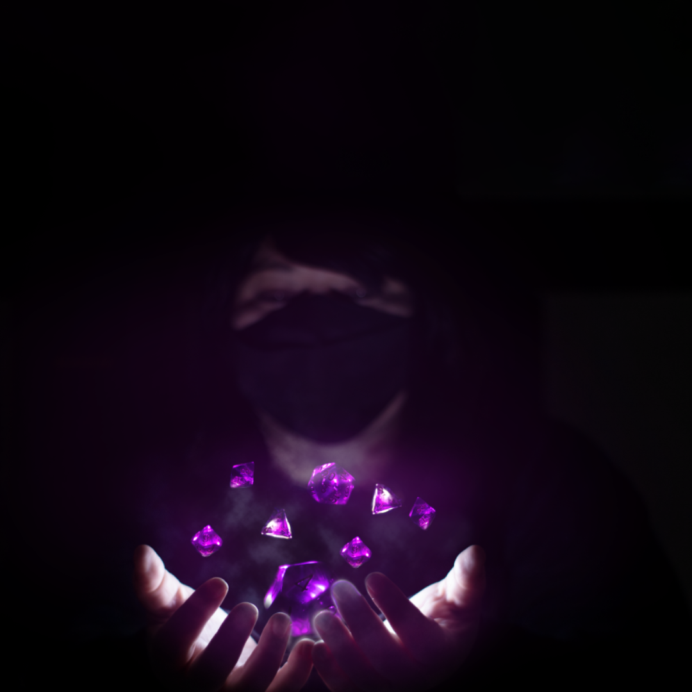
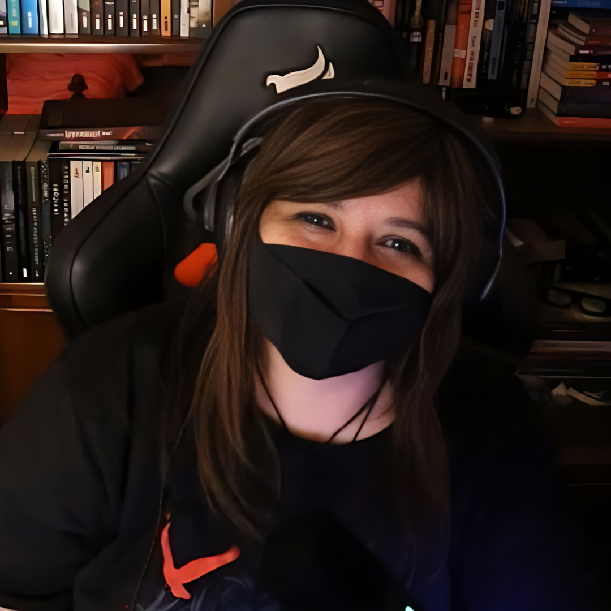

🎲 Narrando aventuras
Criação e condução de campanhas como Operação K e Labirinto: Ecos da Infância, com foco em interpretação, personagens e narrativa.
Media kit • RPG & games
Eu sou Mione Le Fay. Transformo aventuras de RPG, videogames e conversas em experiências para compartilhar com uma comunidade que ama narrativas e boas histórias.

Quem é Mione Le Fay?
Minha relação com a interpretação começou no teatro, aos nove anos. Aos onze, o RPG entrou na minha vida e nunca mais saiu. Passei por mesas presenciais, LARP, jogos narrativos e plataformas digitais, sempre fascinada por personagens, mundos e possibilidades.
Também cresci entre videogames, fliperamas e LAN houses. Sou formada em Jornalismo e trabalhei como professora, experiências que levo para a comunicação, a criação de personagens e a condução de aventuras.
Hoje produzo e participo de campanhas de RPG, lives de gameplay e podcasts. Em 2026, também comecei a narrar campanhas próprias, incluindo Operação K e Labirinto: Ecos da Infância.

Comunidade & alcance
Dados das plataformas, com períodos e universos de medição identificados. O público reúne pessoas interessadas em RPG, jogos e conteúdos de diferentes fases da minha trajetória.
03 a 30/10/2026 (28 dias)
Visualizações: 70,1% homens; 29,9% mulheres; 82,1% do Brasil. Faixas etárias: 25–34 (77,8%) e 35–44 (22,2%).
30/09 a 30/10/2026
Seguidores: 57,2% mulheres; 42,8% homens; 76,6% do Brasil. Faixas etárias: 25–34 (34,6%) e 35–44 (29,1%).
Dados de outubro de 2026. Consultando atualização...
Os dados demográficos do YouTube se referem a visualizações; os do Instagram, a seguidores. Métricas não representam alcance garantido de campanhas futuras.
Portfólio
Criação e condução de campanhas como Operação K e Labirinto: Ecos da Infância, com foco em interpretação, personagens e narrativa.
Participações em campanhas como Guerra Artoniana, Psicomania e Instabunt Tempora, em diferentes canais e universos.
Coapresentadora de um podcast mensal dedicado ao RPG. Conheça o canal.
Cobertura como criadora de conteúdo, com entrevistas e interações com participantes e representantes de editoras. Assista à cobertura.
Convidada em três episódios do RPG com Jambu (episódio 2, episódio 3) e em Thay TV.
Na fase de criação de conteúdo literário, apresentei, entrevistei e mediei encontros em livrarias e lançamentos, além de produzir conteúdo e cobertura jornalística de eventos.
Trajetória & relacionamentos
Na minha trajetória como criadora literária, desenvolvi trabalhos e relacionamentos com editoras como Rocco, Intrínseca, Record, Arqueiro, Novo Conceito, Sinna e DarkSide Books, além de participar de ações em livrarias como Travessa, Saraiva e Cultura.
Também participei de divulgações ligadas a adaptações literárias para o cinema, realizadas por meio das agências Agência Azul e Espaço Z, envolvendo títulos associados à Paris Filmes e à 20th Century Fox. Fiz cobertura escrita do Geek e Game Rio Festival para um blog.
Atualmente, mantenho parcerias editoriais por meio da Dados Mágicos, envolvendo Jambô, Huginn & Muninn, World of Craft, Editora New Order e Tria Editora.
As experiências históricas e as parcerias intermediadas são apresentadas separadamente, sem implicar contratos diretos atuais com todas as marcas citadas.
Oportunidades comerciais
Os formatos abaixo são pontos de partida. Cada proposta é personalizada conforme objetivos, plataformas, produção e calendário.
Uma entrega pontual, como conteúdo curto ou inserção integrada em vídeo.
Combinação de entregas para dar continuidade à mensagem e explorar diferentes formatos.
Campanhas combinando YouTube e Instagram, com TikTok como possibilidade futura, mediante alinhamento. Lives no YouTube também podem ser transmitidas na Twitch, sem cobrança adicional por essa simultaneidade.
One-shots e sessões especiais narradas por mim para apresentar sistemas, cenários e experiências de editoras.
Cobertura presencial ou online, entrevistas, mediação, apresentação e produção de conteúdo. Equipe de apoio e deslocamentos avaliados conforme a proposta.
Vídeos dedicados, gameplays, ações de afiliados, campanhas híbridas e projetos que merecem uma proposta exclusiva.
A marca pode republicar organicamente os conteúdos finais editados nos próprios canais oficiais, preferencialmente com crédito. Arquivos brutos, uso em anúncios pagos, alterações substanciais e licenças ampliadas são negociados separadamente. Recebimento de produtos não implica publicação automática.
Contato comercial
Tem uma editora, jogo, evento ou ideia que combina com o meu trabalho? Conte o que você imagina e vamos construir uma proposta.